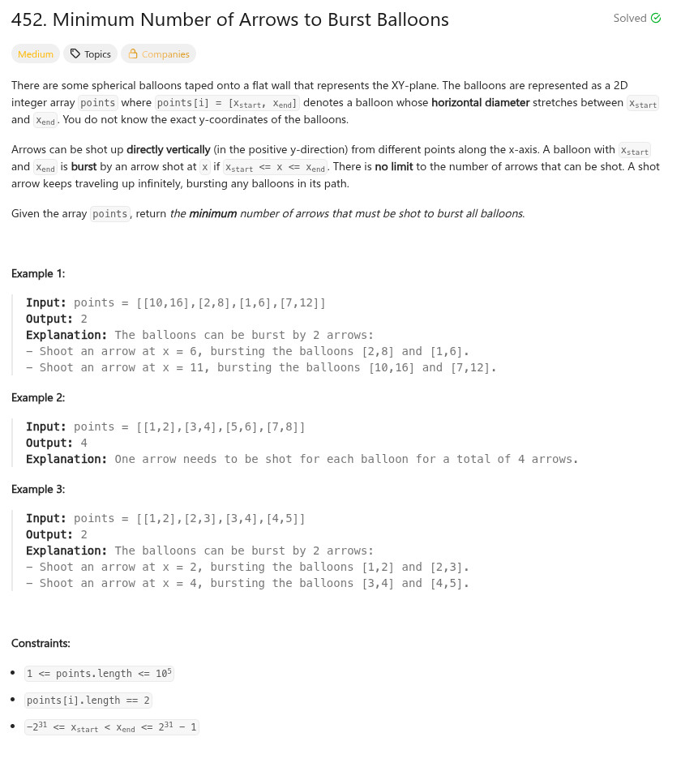

題目：

int mysort(const void *pa, const void *pb)
{
long r = 0;
const int **a = pa;
const int **b = pb;
r = (long)a[0][0] - b[0][0];
if (r == 0) {
r = (long)a[0][1] - b[0][1];
}
if (r < 0) {
r = -1;
}
if (r > 0) {
r = 1;
}
return r;
}
int findMinArrowShots(int** points, int pointsSize, int* pointsColSize)
{
int r = pointsSize;
int cc = 0;
int last = 0;
qsort(points, pointsSize, sizeof(int *), mysort);
for (cc = 1; cc < pointsSize; cc++) {
if (points[cc][0] <= points[last][1]) {
r -= 1;
if (points[cc][1] <= points[last][1]) {
last = cc;
}
}
else {
last = cc;
}
}
return r;
}